Simulate dataset:
nonlin_df =
tibble(
id = 1:100,
x = runif(100, 0, 1),
y = 1 - 10 * (x - .3) ^ 2 + rnorm(100, 0, .3)
)
nonlin_df %>%
ggplot(aes(x = x, y = y)) +
geom_point() + theme_bw()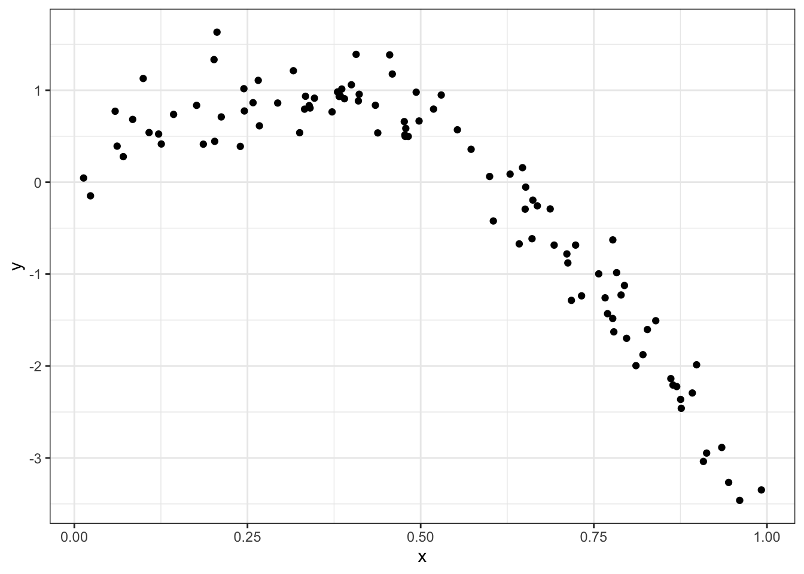
Training and testing…
train_df = sample_n(nonlin_df, 80)
test_df = anti_join(nonlin_df, train_df, by = "id")
ggplot(train_df, aes(x = x, y = y)) +
geom_point() +
geom_point(data = test_df, color = "red")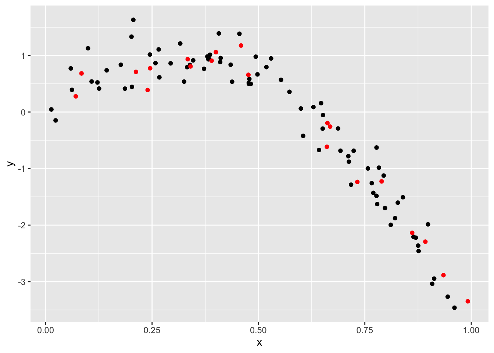
Fit three models of varying goodness:
linear_mod = lm(y ~ x, data = train_df)
smooth_mod = mgcv::gam(y ~ s(x), data = train_df)
wiggly_mod = mgcv::gam(y ~ s(x, k = 30), sp = 10e-6, data = train_df)Look at some fits…
train_df %>%
add_predictions(smooth_mod) %>%
ggplot(aes(x = x, y = y)) + geom_point() +
geom_line(aes(y = pred), color = "red")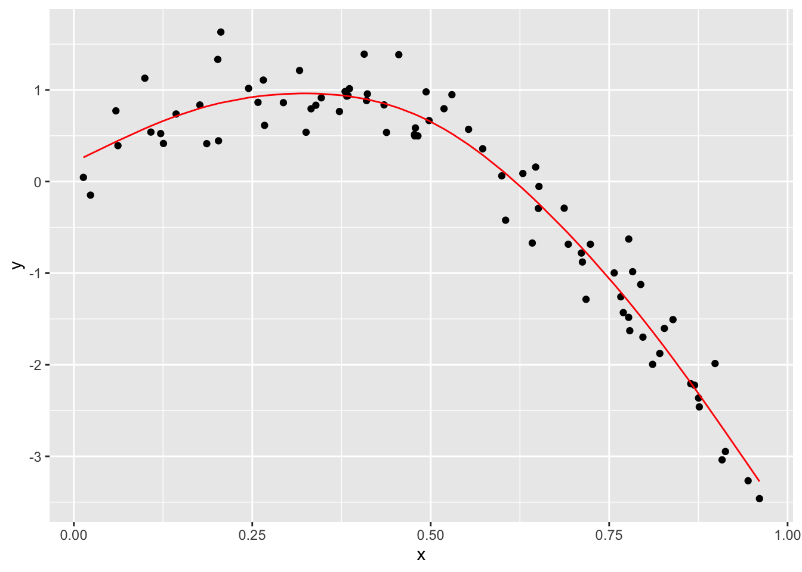
train_df %>%
add_predictions(wiggly_mod) %>%
ggplot(aes(x = x, y = y)) + geom_point() +
geom_line(aes(y = pred), color = "red")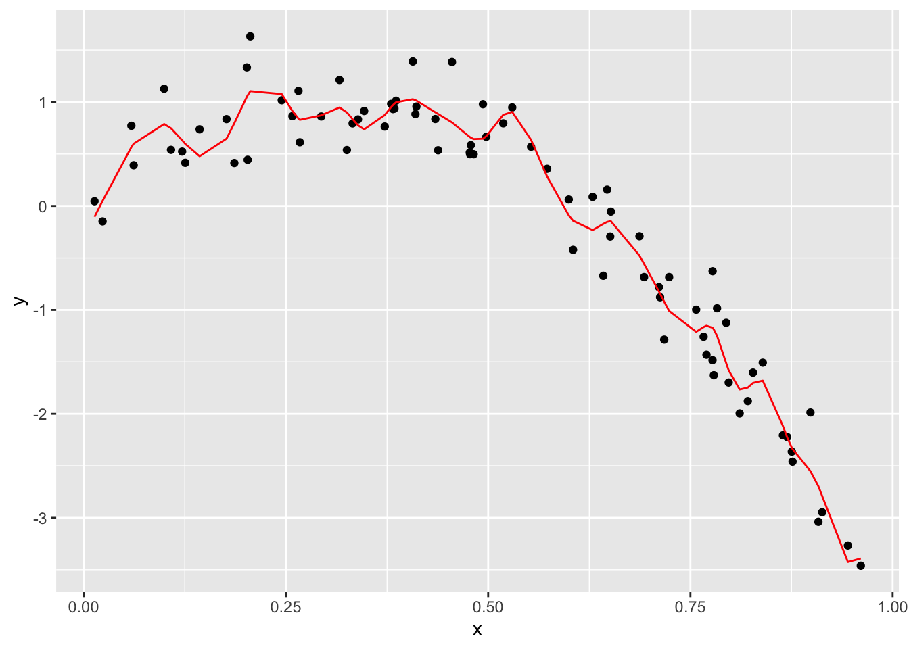
rmse(linear_mod, test_df)## [1] 0.7052956rmse(smooth_mod, test_df)## [1] 0.2221774rmse(wiggly_mod, test_df)## [1] 0.289051modelr packagecv_df =
crossv_mc(nonlin_df, 100) %>%
mutate(
train = map(train, as_tibble),
test = map(test, as_tibble))Try fitting the linear model to all of these,,,
cv_df =
cv_df %>%
mutate(linear_mod = map(train, ~lm(y ~ x, data = .x)),
smooth_mod = map(train, ~mgcv::gam(y ~ s(x), data = .x)),
wiggly_mod = map(train, ~gam(y ~ s(x, k = 30), sp = 10e-6, data = .x))) %>%
mutate(rmse_linear = map2_dbl(linear_mod, test, ~rmse(model = .x, data = .y)),
rmse_smooth = map2_dbl(smooth_mod, test, ~rmse(model = .x, data = .y)),
rmse_wiggly = map2_dbl(wiggly_mod, test, ~rmse(model = .x, data = .y)))cv_df %>%
select(starts_with("rmse")) %>%
pivot_longer(
everything(),
names_to = "model",
values_to = "rmse",
names_prefix = "rmse_") %>%
mutate(model = fct_inorder(model)) %>%
ggplot(aes(x = model, y = rmse)) + geom_violin()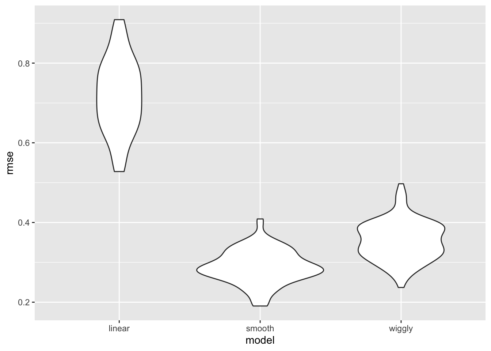
child_growth = read_csv("./data/nepalese_children.csv")## Parsed with column specification:
## cols(
## age = col_double(),
## sex = col_double(),
## weight = col_double(),
## height = col_double(),
## armc = col_double()
## )child_growth %>%
ggplot(aes(x = weight, y = armc)) +
geom_point(alpha = .5, color = 'blue')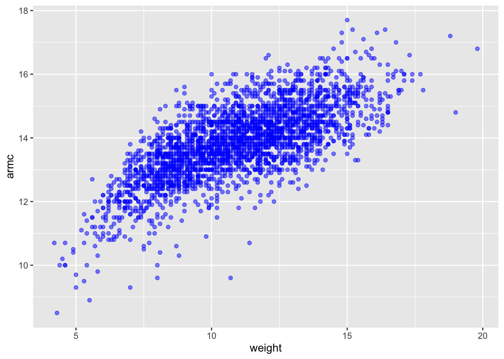
Add change point model:
child_growth =
child_growth %>%
mutate(weight_cp = (weight > 7) * (weight - 7))Fit models:
linear_mod = lm(armc ~ weight, data = child_growth)
pwl_mod = lm(armc ~ weight + weight_cp, data = child_growth)
smooth_mod = gam(armc ~ s(weight), data = child_growth)child_growth %>%
gather_predictions(linear_mod, pwl_mod, smooth_mod) %>%
mutate(model = fct_inorder(model)) %>%
ggplot(aes(x = weight, y = armc)) +
geom_point(alpha = .5, color = 'blue') +
geom_line(aes(y = pred), color = "red") +
facet_grid(~model)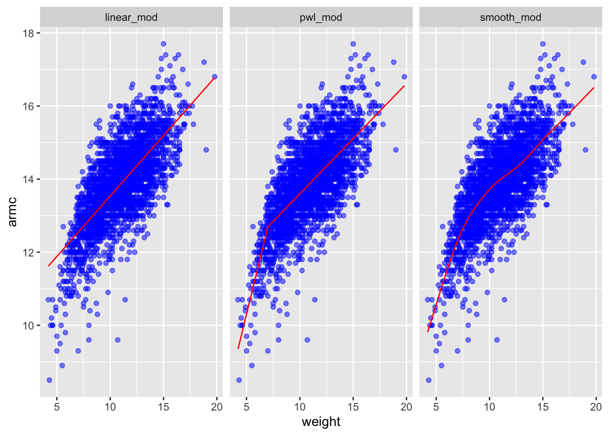
cv_df =
crossv_mc(child_growth, 100) %>%
mutate(
train = map(train, as_tibble),
test = map(test, as_tibble))cv_df =
cv_df %>%
mutate(linear_mod = map(train, ~lm(armc ~ weight, data = .x)),
pwl_mod = map(train, ~lm(armc ~ weight + weight_cp, data = .x)),
smooth_mod = map(train, ~gam(armc ~ s(weight), data = as_tibble(.x)))) %>%
mutate(rmse_linear = map2_dbl(linear_mod, test, ~rmse(model = .x, data = .y)),
rmse_pwl = map2_dbl(pwl_mod, test, ~rmse(model = .x, data = .y)),
rmse_smooth = map2_dbl(smooth_mod, test, ~rmse(model = .x, data = .y)))cv_df %>%
select(starts_with("rmse")) %>%
pivot_longer(
everything(),
names_to = "model",
values_to = "rmse",
names_prefix = "rmse_") %>%
mutate(model = fct_inorder(model)) %>%
ggplot(aes(x = model, y = rmse)) + geom_violin()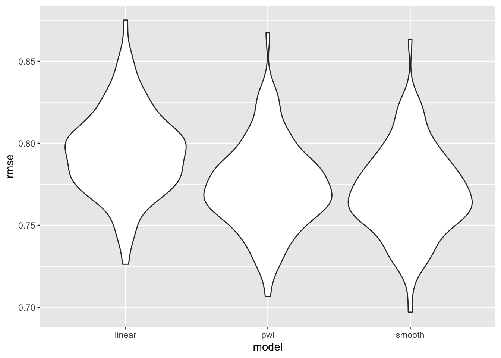
Generate two simulated dataset:
n_samp = 250
sim_df_const =
tibble(
x = rnorm(n_samp, 1, 1),
error = rnorm(n_samp, 0, 1),
y = 2 + 3 * x + error
)
sim_df_nonconst = sim_df_const %>%
mutate(
error = error * .75 * x,
y = 2 + 3 * x + error
)Plot the simulated data and regression line:
sim_df =
bind_rows(const = sim_df_const, nonconst = sim_df_nonconst, .id = "data_source")
sim_df %>%
ggplot(aes(x = x, y = y)) +
geom_point(alpha = .5) +
stat_smooth(method = "lm") +
facet_grid(~data_source) 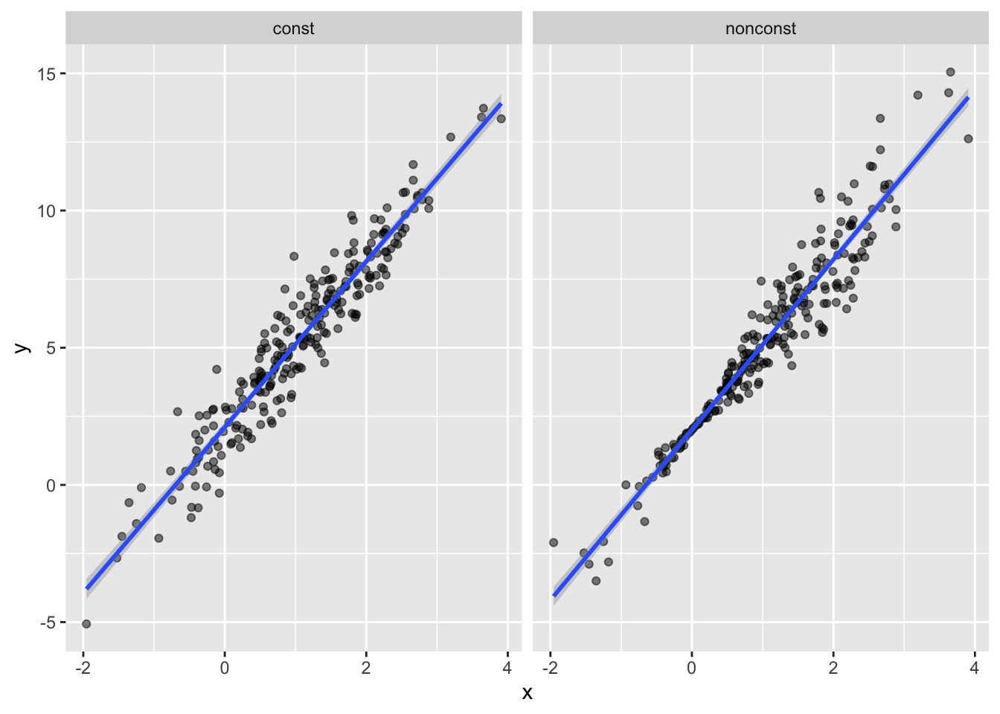
Fit two models:
lm(y ~ x, data = sim_df_const) %>%
broom::tidy() %>%
knitr::kable(digits = 3)| term | estimate | std.error | statistic | p.value |
|---|---|---|---|---|
| (Intercept) | 2.108 | 0.086 | 24.493 | 0 |
| x | 3.020 | 0.059 | 50.963 | 0 |
lm(y ~ x, data = sim_df_nonconst) %>%
broom::tidy() %>%
knitr::kable(digits = 3)| term | estimate | std.error | statistic | p.value |
|---|---|---|---|---|
| (Intercept) | 2.008 | 0.082 | 24.546 | 0 |
| x | 3.103 | 0.056 | 55.087 | 0 |
Write function to draw a bootstrap sample based on a dataframe
boot_sample = function(df) {
sample_frac(df, size = 1, replace = TRUE)
}boot_sample(sim_df_nonconst) %>%
ggplot(aes(x = x, y = y)) +
geom_point(alpha = .5) +
stat_smooth(method = "lm")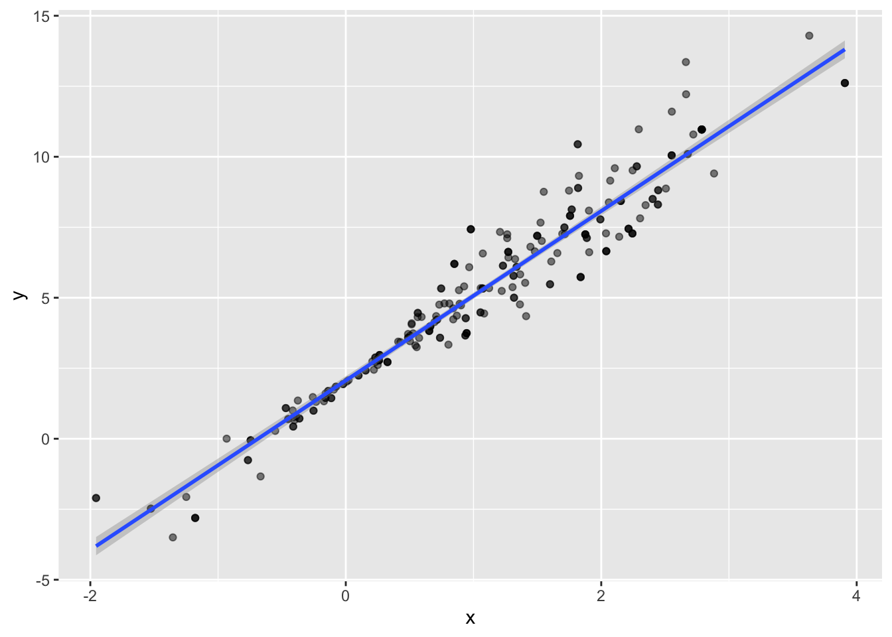
Organize a dataframe
boot_straps =
data_frame(
strap_number = 1:1000,
strap_sample = rerun(1000, boot_sample(sim_df_nonconst))
)## Warning: `data_frame()` is deprecated, use `tibble()`.
## This warning is displayed once per session.boot_straps %>%
filter(strap_number %in% 1:3) %>%
unnest(strap_sample) %>%
ggplot(aes(x = x, y = y)) +
geom_point(alpha = .5) +
stat_smooth(method = "lm", se = FALSE) +
facet_grid(~strap_number) 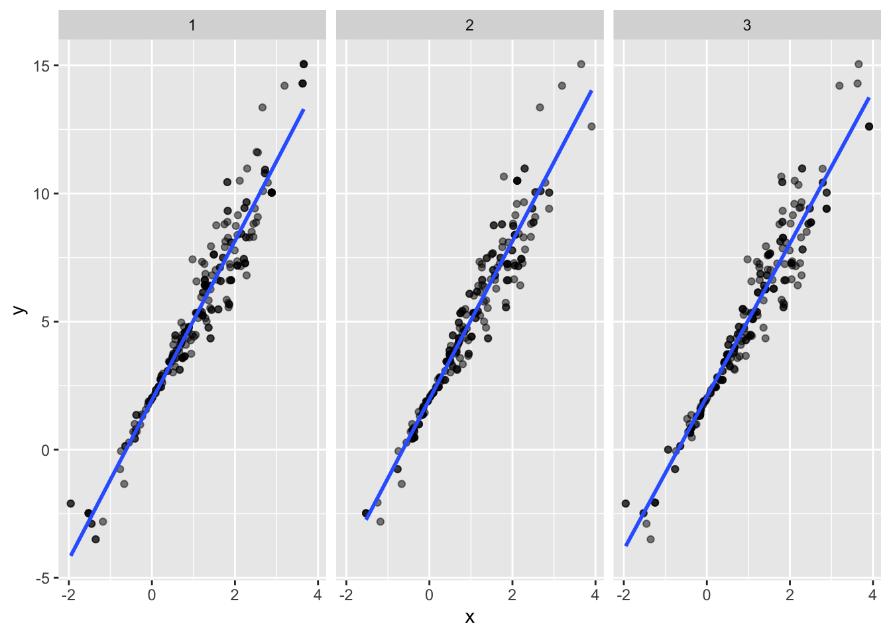
Analyzing bootstrap samples…
bootstrap_results =
boot_straps %>%
mutate(
models = map(strap_sample, ~lm(y ~ x, data = .x) ),
results = map(models, broom::tidy)) %>%
select(-strap_sample, -models) %>%
unnest() %>%
group_by(term) %>%
summarize(boot_se = sd(estimate))## Warning: `cols` is now required.
## Please use `cols = c(results)`bootstrap_results %>%
knitr::kable(digits = 3)| term | boot_se |
|---|---|
| (Intercept) | 0.058 |
| x | 0.067 |
modelr package to do all of thisboot_straps =
sim_df_nonconst %>%
modelr::bootstrap(n = 1000)
as_data_frame(boot_straps$strap[[1]])## Warning: `as_data_frame()` is deprecated, use `as_tibble()` (but mind the new semantics).
## This warning is displayed once per session.## # A tibble: 250 x 3
## x error y
## <dbl> <dbl> <dbl>
## 1 0.574 -0.148 3.57
## 2 1.91 -1.10 6.61
## 3 1.11 -0.214 5.10
## 4 0.220 -0.213 2.45
## 5 1.46 1.19 7.58
## 6 -0.409 -0.0107 0.763
## 7 1.49 1.14 7.62
## 8 2.88 -0.620 10.0
## 9 1.87 -0.995 6.61
## 10 1.26 1.46 7.25
## # … with 240 more rowsdata("nyc_airbnb")
nyc_airbnb =
nyc_airbnb %>%
mutate(stars = review_scores_location / 2) %>%
rename(
boro = neighbourhood_group,
neighborhood = neighbourhood) %>%
filter(boro != "Staten Island") %>%
select(price, stars, boro, neighborhood, room_type)Make a quick plot showing these data, with particular emphasis on the features that interesting in analyzing.
nyc_airbnb %>%
ggplot(aes(x = stars, y = price, color = room_type)) +
geom_point() ## Warning: Removed 9962 rows containing missing values (geom_point).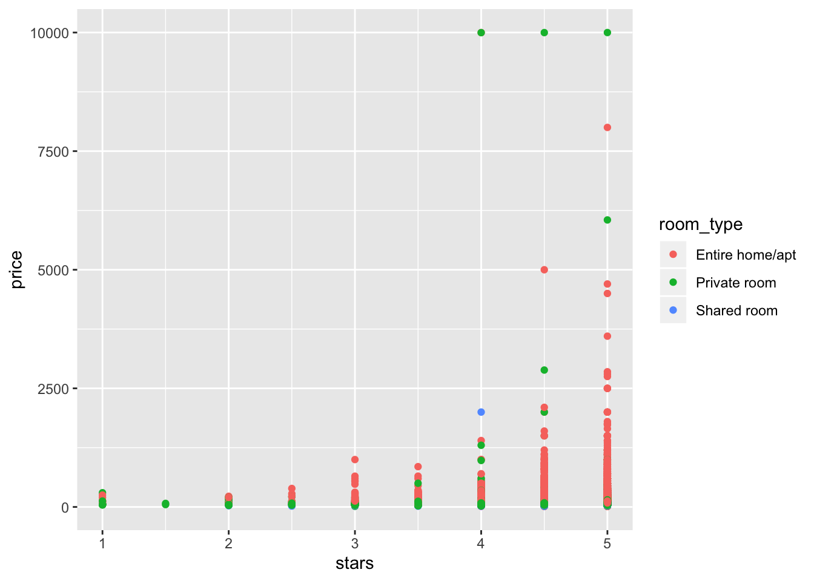
Use the bootstrap to examine the distribution of regression coefficients under repeated sampling.
nyc_airbnb %>%
filter(boro == "Manhattan") %>%
modelr::bootstrap(n = 1000) %>%
mutate(
models = map(strap, ~ lm(price ~ stars + room_type, data = .x)),
results = map(models, broom::tidy)) %>%
select(results) %>%
unnest(results) %>%
filter(term == "stars") %>%
ggplot(aes(x = estimate)) + geom_density()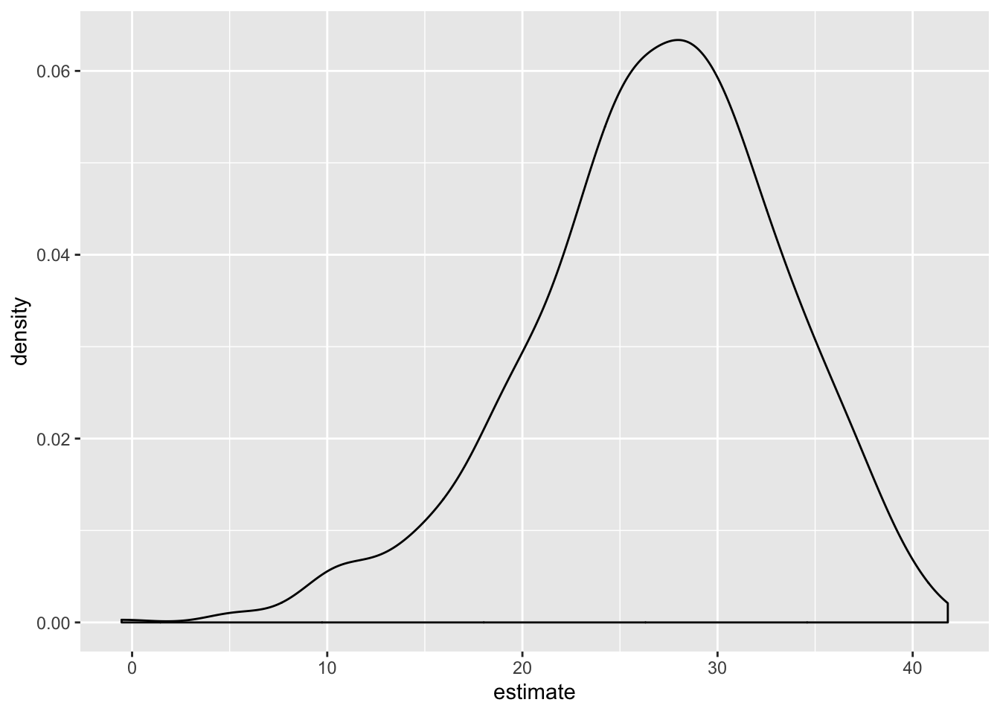